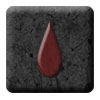
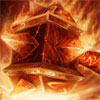
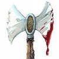

Si ringrazia per l'importante contributo Carmine Laudiero
Si
ringrazia per l'importante contributo Carmine Laudiero
Notizie Generali
Il culto di Bazarak è antico
quasi quanto quello di Srodan ed incarna lo stesso isolamento comune a tutte le
credenze ecumeniche dei nani. Srodan, il padre della razza nanica, affidò i
segreti della cultura nanica ai suoi sei Fratelli Minori, affinché fungessero da
guida e da esempio per tutti i popoli di nani. Srodan ed i suoi fratelli erano i
primi immortali membri della razza nanica e, tra loro,
Srodan
era il Primogenito.
In quanto primo della stirpe, il potente Srodan fu venerato come dio guida,
padre di tutti i Nani, colui che ha donato il Martello e l'Incudine alla
popolazione nanica, maestro di giustizia e fonte del diritto. A fonte della
venerazione di Srodan come unico dio, costui affidò ad ognuno dei suoi
suoi sei Fratelli Minori un
importante compito da svolgere in funzione della razza nanica, elevandoli al
rango di semi-divinità, ossia di entità venerabili ma solo subordinatamente e
congiuntamente al culto del primogenito. In particolare i compiti furono così
suddivisi:
Bazaràk,
anche denominato il
Principe Rosso,
secondogenito della stirpe nanica, divenne la guida nella battaglia ed il
custode della forgia;
Anàya,
la Dama d’Argento,
fu la protettrice dei mercanti e del commercio;
Thòrdal,
il Maglio Possente,
divenne il protettore dei minatori ed il custode delle Miniere;
Fréyda,
l’Ultimo Sentiero,
ebbe il compito di accompagnare i defunti nell’Ultimo Viaggio verso le
Profondità;
Thìrfinn
e Thòrinn,
i Gemelli,
divennero i dispensatori della Sacra Birra ed i fautori del cameratismo tipico
dei clan nanici.
Ma questa situazione non andava bene a Bazaràk. Il potente Principe Rosso,
maestro della guerra, era invidioso della primogenitura di Srodan e ne
contestava le scelte. In un mondo pericoloso pieno di guerre sanguinarie, il
potere del Principe della Battaglia nonché custode dei segreti necessari a
forgiare le fondamentali armi naniche crebbe a dismisura, ben oltre le
aspettative ed il consenso di Srodan. Consapevole della sua crescente forza ed
adorazione,
Bazaràk iniziò a porre in essere
scelte man mano sempre più estreme e pericolose. La tensione tra i divin
Fratelli crebbe ed anche tra gli stessi nani si creò una profonda spaccatura tra
la maggioranza che continuava a rispettare la tradizione ed i dettami di Srodan
e coloro che, in numero sempre crescente, iniziarono ad adorare solo il Principe
Rosso. Quest'ultimi rappresentavano, tra l'altro, la frangia più violenta e
bellicosa del popolo nanico ed erano convinti di poter risolvere tutti i
problemi della razza impegnandosi in lunghe e sanguinose guerre di conquista e
spietate operazioni di contrasto agli oppositori del loro pensiero.
Questa situazione di tensione, quindi, esplose allo scoppio della Guerra degli
Dei. Bazaràk, infatti, decise di sfruttare quel momento di globale confusione e
riorganizzazione delle sfere di influenza divina per sfidare Srodan ed assurgere
ad autonoma divinità. Poiché nessuno degli altri Fratelli Minori prese le parti
del Principe Rosso, Bazaràk sapendo di non poter competere con Srodan e tutti
gli altri Fratelli Minori da solo, li abbandonò cercando aiuto altrove.
Bazaràk, infatti, decise di allearsi alle Forze Oscure ed in particolare strinse
un legale forte con il malvagio Azatàr, demoniaca divinità venerata dagli
umanoidi. Attraverso questo legame, Bazàrak acquisì nuovi poteri, di origine
demoniaca e legati alle fiamme infernali. Questi poteri rafforzarono il suo
potere in quanto costui riuscì a fonderli con le proprie conoscenze divine
originarie (creando ad esempio le armi di sangue ed il sacro martello
incandescente). Ovviamente, però, vi fu un pesante tributo che Bazaràk dovette
pagare. Questi poteri corruppero il suo essere trasformandolo per sempre e
spostandolo definitivamente verso la malvagità tipica degli esseri demoniaci.
Allo stesso tempo costui dovette schierarsi nella Guerra degli Dei contro la
Fratellanza della Luce. Tale scelta, inoltre, scatenò tra i nani una sanguinosa
e crudele guerra civile. Alla fine della Guerra degli Dei, la sconfitta delle
Forze Oscure impose a Bazaràk di nascondersi nelle Profondità della Terra dove
furono costretti a seguirlo i suoi seguaci, scacciati ed esiliati dalle terre naniche per il grave tradimento operato alle spalle del potente primogenito.
Srodan, dal canto suo, decise di mantenere per sé il fondamentale ruolo di guida
nella battaglia e di custode della forgia per evitare commettere un ulteriore
grave errore.
Nonostante fosse stato sconfitto, nonostante fosse stato scacciato e nonostante
fosse stato corrotto dai poteri demoniaci, Bazaràk riuscì nel suo intento
assurgendo a nuova potente divinità areliana, allineata con le Forze Oscure ed
adorata principalmente dalla nuova nascente razza creata dai suoi fedeli
esiliati, il popolo Duergar.
Simboli fondamentali del Culto
|
 |
Tra la simbologia principale del culto di Bazaràk assume uno speciale rilievo la Goccia di Sangue (simbolo sacro). Si tratta di una Goccia di Sangue dipinta, incisa od incastonata su un piccolo blocco di granito scuro tagliato in forma quadrata per divenire un amuleto. la Goccia di Sangue simboleggia il fortissimo legale sussistente tra questo culto ed il versamento del sangue nelle battaglie. Il sangue diviene il collante di questo culto, elemento elevatore e fonte di potere. |
|
 |
Il Martello Infernale. Si tratta di un martello intermente costituito di fiamme infernali e materiale lavico incandescente. Con questo martello Bazaràk schiaccia ed incenerisce i suoi avversari. Per tale motivo, il Martello Infernale simboleggia la furia distruttrice della divinità, la sua mancanza di compassione e la capacità punitiva del culto nei confronti dei suoi nemici. |
|
 |
Altra simbologia ricorrente del culto di Bazaràk è rappresentata dalle Armi di Sangue. Si tratta di armi, non solo ricoperte di sangue, ma che spillano costantemente il sangue assorbito dai corpi martoriati dei nemici del culto. Anche le Armi di Sangue rappresentano il fortissimo legale sussistente tra questo culto ed il versamento del sangue nelle battaglie. Inoltre, tale simbolo richiama il potere demoniaco che Bazaràk riesce ad infondere nelle armi dei suoi seguaci. |
Descrizioni raffiguranti la Divinità
Esiste una notevole differenza tra quelle che erano le ormai rarissime raffigurazioni del Principe Rosso prima della Guerra degli Dei e quelle attuali. Bazaràk era infatti originariamente raffigurato come un possente nano che brandiva un'ascia da guerra bipenne, dalla folta barba rossa e spesso in pose di battaglia con il viso mostrante segni della sua ira e ferocia. Le nuove raffigurazioni della divinità, invece, mostrano un Bazaràk corrotto dai poteri demoniaci. Costui, infatti, possiede una barba letteralmente formata da fiamme infernali in perenne ardore. Bazaràk indossa sulla sua armatura una veste di colore rosso intenso con un cappuccio dal quale fuoriescono le sue corna demoniache. Costui brandisce sempre l'ascia a due mani bipenne, simbolo della battaglia, ma mantiene, attorcigliate attorno al suo corpo, anche alcune pesanti catene che simboleggiano la prigionia infernale.

Semi-dei
Bazarak è una divinità totalitaria, che non ammette altre iconoclastie tra i suoi adoratori. Teologi meno vicini al culto sono inclini a ritenere che questa scelta operata dal malvagio Principe Rosso sia dovuta al timore che egli vive costantemente circa la possibilità che un eventuale semi-divinità possa agire contro di lui come egli stesso fece nei confronti di Srodan, il Primogenito.
Minori
SPIRITI DELLA LAVA : Bazaràk utilizza i terrificanti Spiriti della Lava, indice chiaro dello stretto legame sussistente tra la divinità e le forze demoniache infernali, come suoi guardiani od inviati per spargere morte e distruzione. Esistono diverse creature di lava, sia in forma incandescente che in forma rocciosa, che Bazaràk utilizza come emissari o servitori. Al gradino più basso dei servitori di Bazaràk si trovano le orde di Mastini di Pietra Lavica, terrificanti molossi di pietra lavica capaci di inseguire, sbranare ed incenerire gli avversari del culto. Chierici di Bazaràk di una certa potenza sono in grado di chiedere l'intervento di tali creature per difendere gli interessi della loro fede.
Compiti dei chierici e dei fedeli
Compito dei chierici di
Bazaràk è uno solo: la guerra nel suo aspetto di furia primordiale. Incitano i
fedeli a combattere, gli danno forza e furia per arrecare più distruzione, e
creano armi potenti per spezzare le armature e le ossa dei nemici. Terminare
vittoriosi una battaglia sfociata in un bagno di sangue rappresenta il massimo
contributo che un fedele può dare al culto del Principe Rosso.
Il valore del fedele si vede dal numero di cicatrici in battaglia, dalle urla
delle sue vittime e dal sangue di cui si è ricoperto. Non importa il passato,
non importa il futuro. Bazaràk nella sua furia è abbastanza pragmatico da sapere
che molti dei suoi fedeli non hanno vita lunga. Ma anche abbastanza crudele da
sapere che un nano, prima o poi, nella sua lunga vita di leggi e tradizioni,
almeno una volta si rivolgerà a
lui.
Bazaràk è, infatti, sempre la divinità della guerra e delle armi. Compito dei
seguaci del Principe Rosso è quello di conquistare con la forza le ricchezze del
mondo di Arelia e rendere schiavi tutti i deboli non in grado di confrontarsi
con la potenza e la furia dei seguaci del culto. Schiavi poi utilizzati nelle
più profonde e pericolose miniere dove sono costretti a pesantissimi lavori
forzati per arricchire le casse delle comunità naniche fedeli al malvagio
Bazaràk.
Per tale motivo, spesso, la vita di un seguace di Bazaràk è come una cometa
infuocata votata alla distruzione. Ma per i fedeli più forti, scaltri e
fortunati la vita riserverà ricchezze e privilegi senza pari.
Le spedizioni organizzate con l'appoggio del culto rappresentano, in fin dei
conti, la vera essenza di questa religione. Tali missioni sono periodicamente
organizzate anche per necessità per procurare nuovi schiavi, per procurare le
materie prime e quanto è necessario per la sopravvivenza della comunità e del
suo tempio. Le comunità (anche naniche) più isolate, i posti di ristoro e di
passaggio, le miniere, i magazzini agricoli ed i pozzi costituiscono i bersagli
principali delle razzie. I chierici più influenti e di alto livello devono
spesso sostenere direttamente ed indirettamente le azioni più rischiose ed
impegnative. Per tale motivo, il loro placet è considerato quasi sempre
necessario prima di organizzare un'invasione od una guerra. I chierici di rango
inferiore e gli altri seguaci, in particolare le Asce Sanguinarie e le Furie di
Sangue sono mandati in giro in piccoli gruppi per fare da esploratori e per
sorprendere e saccheggiare viandanti, carovane e piccoli insediamenti.
Un altro dovere dei chierici è quello di dedicarsi periodicamente ad infondere i
poteri di Bazaràk nelle armi forgiate dai nani. Ovviamente quest'attività viene
sempre ed adeguatamente ricompensata da coloro si recano al tempio per
utilizzare le armi con i poteri dell'oscura divinità.
Organizzazione del Culto su Arelia
Dato il tendenziale
isolazionismo delle comunità naniche e data la maggiore difficoltà negli
spostamenti dei rappresentati del popolo nanico (dovuta ad una serie di ragioni
quali il minore fattore movimento, la difficoltà di spostamento in zone
montuose, la naturale avversione alla magia con conseguente maggiore rarità di
utilizzo di mezzi magici di spostamento), nonché alla tendenza distruttiva del
culto, i templi di Bazaràk sono situatati in zone ancora più remote di quelli di
Srodan. Per motivi religiosi o pratici i templi di Bazaràk sono situati in
posizioni particolari. Deve trattarsi di luoghi sotterranei dove abbonda la
roccia lavica e preferibilmente nei pressi di falde o canali lavici sotterranei
(zone, quindi, di frequente attività sismica).
Il tempio è formato da un'area comune di adorazione davanti ad un altare di
pietra lavica e ossidiana, situato preferibilmente davanti ad una grande pozza
lavica o nei pressi di un canale di lava. In mancanza della lava sono utilizzati
grandi bracieri costantemente accessi.
I ministri del culto si dividono in
chierici,
Asce Sanguinarie
(paladini) e
Furie di Sangue
(classe specifica di warrior/cleric talentuosi).
I chierici non hanno un ordine gerarchico particolare, dando la supremazia a
colui che è più forte. In ogni Tempio c'è una sola Mano di sangue, a prescindere
dall'anzianità e dal livello; gli altri sono tutti sotto a lui, e ogni seguace
ha la possibilità di sfidarlo a duello, o peggio di ucciderlo. Chi soccombe
viene gettato nella pozza lavica principale e automaticamente rinasce come
spirito di lava.
La gerarchia ecclesiastica dei chierici di Bazaràk è ben definita ma non è
rigida, tanto che ogni figura della chiesa deve rendere conto esclusivamente al
proprio superiore, che funge quindi da supervisore. I templi possono entrare in
conflitto tra di loro, quando La Mano Insaguinata di un tempio decide di
espandere il proprio dominio, includendo quelli sottoposti ad un altro tempio
maggiore. I templi di Bazaràk si trovano all'interno delle città duergar, sono
composti da grandi blocchi di granito annerito dalla fuliggine e dai fumi delle
grande fornace perennemente accesa al loro interno. A capo di un tempio di
Bazaràk vi è un chierico che acquista il titolo di
Mano Insanguinata
(chierico di almeno 9° livello di esperienza) il cui compito è quello di
sopraintendere alle attività del tempio, stabilire le linee guida della politica
e dell'economia dello stesso. Oltre ad avere potere assoluto all'interno del suo
tempio, la Mano Insanguinata è solitamente una personalità molto influente
all'interno di tutta la comunità. Le sue parole ed i suoi avvisi sono, infatti,
sono tenute in grande considerazione specie quando i nobili e gli altri organi
politici si apprestano ad impostare la politica militare ed estera della
comunità. Alla base della gerarchia del tempio vi sono i chierici di rango
inferiore chiamate le
Incudini Nere (chierici
dal 1° al 3° livello di esperienza). Come lo stesso nome può far intuire,
costoro si trovano al rango più basso e quindi subiscono in senso letterale le
decisioni dei chierici più potenti. Le Incudini Nere devono passare parte del
loro tempo all'interno del tempio a svolgere mansioni cerimoniali potendo
allontanarsi dallo stesso solo per fare donazioni di sangue alla divinità. Una
volta raggiunto il 4° livello di esperienza, i chierici avranno la possibilità
di dedicare la propria vita a diffondere la parola di Bazaràk acquisendo il
titolo di Martelli della
Fede. Anche Martelli della
Fede è fatto però obbligo di presenziare al tempio e svolgere cerimonie. In
particolare, costoro devono necessariamente occuparsi della produzione di
incantamenti minori della divinità da diffondere tra il popolo duergar.
I Martelli della Fede possono raggiungere il sesto livello di esperienza. Una
volta pronti per divenire di settimo livello, infatti, costoro dovranno superare
la Prova del Sangue.
Si tratta di una difficile missione, affidata direttamente dalla Mano
Insaguinata, che il Martello delle Fede deve superare da solo. La missione non
ammette fallimento, in pratica fallire equivale a morire. Qualora il chierico si
arrende, infatti, costui sarà ritenuto indegno, imprigionato e sacrificato in un
rito truculento. I chierici che tornano, dopo aver superato la prova, potranno
addestrarsi raggiungendo il settimo livello di esperienza, al raggiungimento del
quale saranno iniziati come
Maestri della Forgia di Sangue.
I Maestri della Forgia di Sangue sono riconosciuti come potenti chierici e
collaboratori della Mano Insanguinata, ai quali quest'ultima delega spesso
importanti funzioni di comando all'interno del tempio. Una volta raggiunto il 9°
livello di esperienza il chierico può decidere di allontanarsi dal proprio
tempio per fondarne uno nuovo presso una comunità che ne è sprovvista.
Tale decisione non è comune ed il chierico che intende prenderla deve possedere
adeguati fondi ed un forte appoggio politico per riuscire nell'intento.
Conflitto di Potere
Esterno tra Templi:
Trattandosi di una fede belligerante ed aggressiva, i rapporti tra i templi
possono divenire conflittuali. Ciò si verifica quando gli interessi economici o
le mire espansionistiche di un tempio guidato da una Mano Insaguinata si
estendono in una zona occupata da un'altro autonomo tempio guidato da una
diversa Mano Insanguinata, questo accavallarsi di interessi può risolversi in
due soli modi:
Sottomissione:
una delle due Mani Insanguinate si sottomette al tempio più potente. Il capo del
tempio sottomesso prende, quindi, il titolo di
Seconda Mano di Sangue.
La Seconda Mano di Sangue continua a guidare il proprio tempio ma nel rispetto
delle direttive politiche della Mano Insaguinata. Inoltre, il tempio satellite
deve versare il 20% di tutti i suoi guadagni lordi al tempio dominante. Come
previsto nelle Lastre Oscure, la decisione di sottomissione deve essere
necessariamente accettata e rispettata dal tempio dominante. Unica eccezione
potrà essere un manifesto atto di tradimento posto in essere dal tempio
sottomesso nei confronti del tempio dominante nel qual caso potrà verificarsi un
conflitto religioso.
Conflitto Religioso:
si verifica quando nessuno dei due templi accetta di sottomettersi all'altro. Si
tratta di una vera guerra religiosa che porterà i due templi, ed i loro
ministri, ad affrontarsi ferocemente. Questa guerra terminerà solo con la morte
di una delle due Mani Insanguinate o con l'occupazione fisica di uno dei due
templi. Questo conflitto può riguardare solo i ministri del culto (ciò accade
solitamente quando i due templi fanno parte della medesima comunità) oppure può
coinvolgere le comunità di appartenenza trasformando il conflitto in una vera e
propria guerra santa tra le due comunità.
Conflitto di Potere
Interno al Tempio:
Trattandosi Una volta all'anno di solito prima della cerimonia della Memoria di
Sangue è possibile che un chierico di Bazaràk che abbia raggiunto almeno il 7
livello e che abbia avuto il grado di Messaggero del Sangue può sfidare la Mano
insaguinata di un tempio per succedervi. La sfida che avverrà all'interno della
zona centrale del tempio, dove è presente la grande Forgia, segue delle regole
ben precise. Entrambi i chierici non potranno usare oggetti magici, ad
esclusioni di quelli religiosi e delle armi sacre. Al termine del combattimento,
che deve essere sempre all'ultimo sangue, il vincitore sarà proclamato come
nuova Mano Insaguinata
Ogni anno in tutti i templi duergar di Bazarak si svolge la festa Della Memoria di Sangue. Una macabra manifestazione durante la quale sono presenti tutti i paladini e i chierici che raccontano con particolari forti e truculenti, tutte le scorrerie e i saccheggi a cui hanno partecipato. Durante questa cerimonia, vengono di solito anche organizzate le attività espansionistiche per l'anno seguente, con l'esposizione di una serie di teste mozzate di quelle razze o zone che dovranno essere colpite dalle razzie ed espansione. Spesso capita che una delle teste sia rappresentata da qualche duergar seguace di un'altro tempio di Bazaràk, e questo significa che ci si prepara ad una grande guerra relgiosa di espansione. Sono poche le feste o le riunioni dei chierici di Bazaràk perchè queste sono considerate delle pause pericolose nella missione di portare morte e distruzione in nome del dio.
Accesso agli incantesimi ed ai poteri dei sacerdoti di Bazaràk
Connaturali all'animo dei nani e, quindi, allo stesso spirito di Bazaràk sono l'avarizia ed il principio in base al quale nulla è mai fatto gratuitamente. Per tale motivo i chierici di Bazaràk chiedono sempre remunerazioni a coloro desiderino, fedeli od infedeli, usufruire dei loro poteri divini.
| Livello di potere della magia | Infedeli | Fedeli di Bazaràk |
| Orison | 7 corone | 5 corone |
| 1° livello | 45 corone | 35 corone |
| 2° livello | 90 corone | 70 corone |
| 3° livello | 275 corone | 215 corone |
| 4° livello | 500 corone | 390 corone |
| 5° livello | 1000 corone | 780 corone |
| 6° livello | 2000 corone | 1560 corone |
| 7° livello | 3000 corone |
Al costo degli incantesimi e delle rune va aggiunto il costo del componente materiale necessario a lanciarli quando si tratta di un componente materiale che si consuma al lancio delle magie.
| Costo supplementare | Infedeli | Fedeli di Bazaràk |
| per livello superiore al minimo | 7 corone | 5 corone |
Tutti i Ministri del Culto di Bazaràk devono pagare un prezzo pari alla metà di quello che avrebbe pagato un fedele quando richiedono magie effettuate da un altro Ministro del Culto della divinità.
Gemme sacre alla divinità (link)
| Pietra Ornamentale |
Pietra Preziosa |
Gemma Rara |
| ONICE | DIASPRO SANGUIGNO | OPALE DI FUOCO |
 |
 |
 |
I Paladini di Bazaràk

Le Asce Sanguinarie sono la
manifestazione concreta della furia guerriera di Bazaràk.
Non si può parlare di un vero e proprio ordine quanto piuttosto di una
fratellanza. Le Asce Sanguinarie sono unite tra loro dalla decisione di
consacrare la propria vita nella maniera più fedele e simbiotica possibile alla
via della guerra e del sangue. Non esiste un vero e proprio vincolo di
obbedienza reciproca, anzi se si ritrovano più paladini su un campo da
battaglia, non è raro che sorga una sorta di competizione tra loro per
dimostrare chi è in grado di spargere più sangue nemico.
Le Asce Sangunarie, con il proprio comportamento sono da esempio per i fedeli e
monito per gli infedeli. L'unica vita degna di essere vissuta per un Ascia
Sanguinaria è quella tendente accumulare ricchezze dopo aver dimostrato ferocia
e coraggio in battaglia.
Sebbene i paladini di Bazaràk non siano legati da un vero vincolo di
subordinazione con il tempio presso il quale si sono consacrati, costoro devono
sempre rispettare la politica adottata dal tempio e tutelarne gli interessi.
Solo il vertice del tempio dove sono stati consacrati, può convocare, una volta
all'anno, a raccolta le varie Asce Sanguinarie per assegnare loro una missione
da svolgere nell'interesse del tempio. Il compito assegnato sarà commisurato
alla forza del paladino, anche se può risultare difficile necessitando
l'intervento di alleati, e sarà sempre retribuito a seconda della potenza dello
stesso. Si tratta di una ricompensa forfettaria il cui ammontare è indicato
nelle Sacre Tavole del Sangue e sulla quale il paladino non dovrà versare alcun
contributo al tempio. Proprio perché non esiste un rapporto di obbedienza
assoluta, l'Ascia Sangunaria può, se lo ritiene opportuno, rifiutare di eseguire
la missione e non potrà essere obbligato ad eseguirne un'altra nel medesimo anno
solare. In questo caso, però, costui dovrà eseguire entro 12 mesi dal rifiuto un
ulteriore Dono di Sangue alla propria divinità, per riconciliare il suo spirito
con la stessa. Si tratta di un vero e proprio tributo di sangue
addizionale rispetto ai tre doni normalmente previsti dalle restrizioni
dell'Ascia Sanguinaria. In caso di mancato adempimento di questo dono
supplementare, però, quest'azione sarà considerata come meritevole anche da sola
della perdita di status di paladino.
Sacri Punti Sanguinari
I chierici di Bazaràk possono accumulare influenza divina sotto forma di Sacri Punti Sanguinari. Questi punti, una volta accumulati, possono essere utilizzati dai chierici di Bazaràk in molte situazioni come descritto nella divinità. In particolare, ogni chierico potrà accumulare un ammontare massimo di punti sanguinari pari ad 1 + 2 per livello di esperienza raggiunto. Ad esempio, un chierico di 7° livello di esperienza potrà accumulare fino ad un massimo di 15 Sacri Punti Sanguinari. Si tratta del limite massimo di punti accumulabile, ma il chierico, una volta o prima di aver raggiunto tale ammontare massimo, potrà sempre spendere tale punti per poterne accumulare di nuovi. In pratica, ogni volta che un chierico di Bazaràk combatte utilizzando un'arma da corpo a corpo permessa dal suo culto, uccide una creatura dotata di corpo organico di tipo animale (non quindi esseri come i non morti, i costruiti, i vegetali, i melmoidi e le creature estraplanari) costui accumula un ammontare di Sacri Punti Sanguinari pari alla metà (calcolata per eccesso) dei livelli/dadi vita della creatura uccisa. Bazaràk, ovviamente, considererà validi solo le uccisioni poste in essere nel corso di veri e propri combattimenti che risultino in qualche modo impegnativi per il chierico (ad insindacabile giudizio del Dungeon Master). L'uccisione di prigionieri, creature che si siano arrese o creature estremamente deboli rispetto al chierico non saranno in alcun caso considerati validi.
Schema di gioco
Allineamento
Divinità:
Chierici: Qualsiasi Evil
Seguaci:
Abilità minime richieste
(con Forza, Saggezza e Cosituzione 15 o + = bonus +10% ai punti esperienza)
* costoro ottengono 525 punti arma al primo livello e 90 punti arma per livello
superiore al primo.
* costoro ottengono punti ferita supplementari per elevati punteggi
di costituzione come se fossero appartenenti ad una classe di combattenti.
* costoro ottengono punti combattimento supplementari per elevati punteggi
di intelligenza come se fossero appartenenti ad una classe di
combattenti.
* costoro possono acquisire competenze non relative alle armi riservate alle
classi di combattenti senza pagare punti supplementari.
* costoro possono acquisire le arti di combattimento riservate alle classi di
combattenti.
 |
Maestri della Forgia |

Incantesimi
Bazaràk concede sia incantesimi che hanno a che fare con la resistenza, la roccia ed i minerali, sia incantesimi che usano le fiamme ed il calore infernale che sfruttano la connessione della divinità con i poteri demoniaci.
Incantesimi generali
1
|
Battlefate |
|
Call Upon Faith |
|
Combine |
| Detect Magic |
|
Endure Cold and Heat |
| Magical Stone |
| Torch of Everburning |
| Aid |
| Fire Weapon |
|
Heat Metal |
| Produce Flame |
|
Resist Acid and Corrosion |
|
Resist Cold |
| Resist Fire |
| Sanctify |
3
|
Dispel Magic |
|
Glyph of Warding |
| Meld into Stone |
|
Protection from Fire |
4
|
Dimensional Anchor |
|
Focus |
|
Ground Fire |
|
Spell Immunity |
| Unfailing Endurance |
|
Weapon of Faith |
5
|
|
|
Holy Favor |
| Sentinel of Faith |
Incantesimi speciali
1
|
Blood Weapon |
|
Plunder of Bazaràk |
| Spikedbeard |
| Stalagmite of Bazaràk |
| Cauterize |
|
Chains of Imprisonment |
| Flaming Runes |
| Infernal Globe |
3
| Armour of Bazaràk |
|
Barrier of Flames |
| Fury of Blood |
|
Warrior's Soul |
4
|
Flow of Blood |
| Hammer of Bazaràk |
|
Hound of Igneous Rock |
| Infernal Chains |